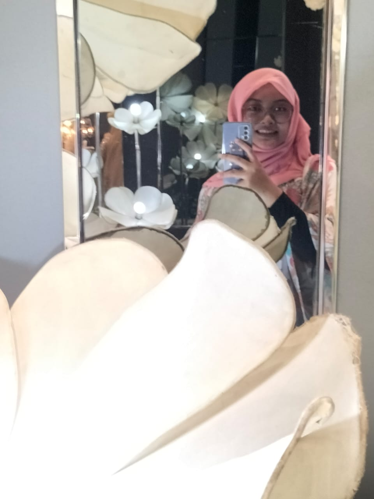

ABOUT ME
Putri Syafira Nurlaela

Putri Syafira Nurlaela, itulah nama lengkap saya. Namun orang terdekat kerap memanggil dengan nama Syafira atau Fira. Lahir dari keluarga kecil beranggotakan 5 orang, anak tengah dari 3 bersaudara. Lokasi tempat tinggal berada di Kawasan Lubang Buaya, Jakarta Timur. Makanan favorit saya yakni, Sate Padang & Mac n Cheese, untuk minuman favorit saya suka Jus Melon. Selain itu, saya suka sekali dengan warna-warna cerah, karena saya percaya warna tersebut dapat menarik positive energy. Sekian fakta singkat tentang diri saya.
EDUCATION
SDN Sungai Besar 2
- 2009-2015
SMPN 1 Banjarbaru
- 2015-2018
SMAS Islam Assyafiiyah 02
- 2018-2021
Universitas Indraprasta PGRI
- 2022-2026
HOBBY
Watching a Movie
Baking
Listening to the Music